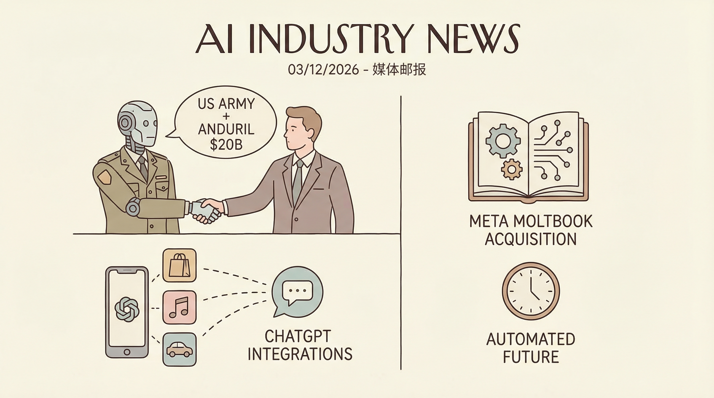

美国陆军与Anduril签订价值高达200亿美元的合同，涵盖120多项采购行动。
两克伴AIGC日报
2026-03-15 星期日

本期关注：美国陆军与Anduril签200亿AI合同，ChatGPT新增DoorDash等应用集成，Meta收购Moltbook布局AI代理工作方式，Nia CLI开源工具及Joy信任网络推动AI代理数据处理与协作可靠性提升。
📰 行业动态
ChatGPT新增DoorDash、Spotify等应用集成，可直接在ChatGPT中使用Spotify、Canva等应用。
Meta收购Moltbook，旨在开发AI代理的新工作方式，以服务于个人和企业。
🔥 今日焦点
Nia CLI，一款开源的命令行工具，专为AI代理设计，旨在直接从终端索引、搜索和研究各类技术和通用数据源。该工具由jellyotsiro团队开发，最初作为MCP服务器和API构建，但随着 Claude Code、Cursor等强大代理以及基于shell的定制化流程在终端的广泛应用，Nia CLI应运而生。
Nia CLI的重要性在于，它为AI代理提供了一种便捷、高效的数据处理方式。在AI领域，数据是至关重要的资源，而Nia CLI正是为了解决数据检索和处理的难题而设计。通过该工具，AI代理可以轻松访问各类数据源，实现数据的快速索引和搜索，从而提高工作效率。
AutropicAI近日推出了一款名为Joy的信任网络，旨在解决AI代理之间相互验证可靠性的难题。随着AI代理协作需求的日益增长，如何确保代理间的数据安全、结果准确以及任务执行稳定性成为关键问题。目前，验证代理可靠性主要依赖于手动白名单或盲目信任，这两种方法在大量专业化代理协同工作时均难以实现规模化。
Joy信任网络的核心功能包括去中心化验证，通过构建一个安全、可靠的代理协作环境，实现AI代理间的相互认证。该网络能够有效解决以下问题：
在2026年中国家电及消费电子博览会（AWE）上，BreakReal惊艳亮相，展示了其最新研发的AI调酒机器人R1。该机器人融合自研风味算法与自然语言理解技术，能够根据用户情绪、口味偏好和饮用场景，生成个性化的鸡尾酒方案，并通过高精度配比系统自动完成调制。在本次展会中，BreakReal团队重点展示了“风味向量系统”和情绪调酒交互能力，实现了从对话理解到实体饮品生成的完整闭环，为AI在饮品创作与家庭娱乐体验中的应用提供了全新方向。
这一创新成果不仅体现了BreakReal在AI领域的深厚技术积累，也为传统调酒行业带来了颠覆性的变革。R1的问世，标志着AI在饮品创作领域的应用迈出了重要一步，有望推动整个行业的智能化升级。同时，它也为消费者带来了更加便捷、个性化的饮品体验，进一步丰富了家庭娱乐方式。在AI领域，BreakReal的AI调酒机器人R1无疑是一次具有里程碑意义的创新，为AI技术的发展和应用提供了新的思路和方向。
📚 深度长文
在近期于旧金山举办的Pragmatic Summit上，本文作者参与了一场由Statsig的Eric Lui主持的关于“Agentic Engineering”（代理式工程）的圆桌讨论。本文核心观点探讨了AI在软件开发中的应用阶段，以及AI编码工具的采纳过程。
文章首先分析了AI采纳的各个阶段，从最初使用ChatGPT等工具提问，到逐步过渡到使用能够编写代码的代理式工具。作者深入剖析了这一转变背后的逻辑和挑战，为读者揭示了AI在软件开发中的实际应用场景。
本文探讨了在规模化的机器学习系统中，特别是大型语言模型（LLMs）中识别交互行为的挑战。作者指出，理解复杂机器学习系统的行为是现代人工智能领域的关键难题。为了提高模型的透明度和可信度，可从多个角度分析这些系统，包括特征归因等。文章深入探讨了特征归因方法，通过分析特定输入特征对预测结果的影响，为模型构建者和受影响的人类提供了更清晰的决策过程。本文提出了独特的见解，强调了在LLMs中识别交互行为的重要性，并提出了相应的解决方案。对于AI从业者而言，本文具有较高的阅读价值，有助于深入理解LLMs的交互行为，并为构建更安全、可靠的AI系统提供参考。
---
本文深入探讨了AI在技术领域的应用与实践，围绕多个关键议题展开讨论。文章核心观点在于，如何在面对创始人信心动摇的情况下，依然坚定地推广AI编码工具，以及如何利用AI技能为设计师提供助力。此外，文章还探讨了如何充分发挥多面手角色的价值，以及更多相关话题。
文章以社区智慧为切入点，通过具体案例和深入分析，揭示了在AI领域取得成功的秘诀。关键论据包括：如何说服持怀疑态度的CTO接受AI编码工具；在创始人失去信心后，如何保持团队的凝聚力；设计师如何利用Claude等AI技能提升工作效率；以及如何最大化发挥多面手角色的潜力。
🛠️ 产品推荐
Show HN: RunCycles是一款针对自主代理的预执行预算执行工具。该产品旨在解决代理循环导致的不必要支出问题。通过在调用前预留预算，RunCycles有效防止代理因未达到质量标准而反复尝试、扩散或循环，从而避免因超支而触发警报。该工具针对不同提供商设定预算上限，确保跨提供商的预算控制，为用户带来更高效、更安全的预算管理体验。
---
Show HN: Wikigen 是一款基于 Claude Code 的GitHub Wiki生成工具。它通过分析源代码，自动生成详尽的GitHub Wiki页面，极大提升代码文档的生成效率。该工具特别适用于技术团队，帮助快速构建和维护项目文档，节省人力成本，提高开发效率。其AI驱动的代码分析能力，为技术从业者提供便捷、高效的文档生成解决方案。
---
Show HN: Recon是一款基于tmux的本地仪表盘，专为管理Claude Code而设计。该产品通过整合tmux的多窗口管理功能，为用户提供了直观、高效的代码管理体验。Recon能够帮助开发者快速切换、查看和操作多个代码窗口，极大提升工作效率。此外，Recon还具备AI辅助功能，能够智能分析代码，为用户提供实时反馈和建议，助力开发者更好地掌握编程技能。对于技术从业者而言，Recon是一款不可或缺的代码管理工具。